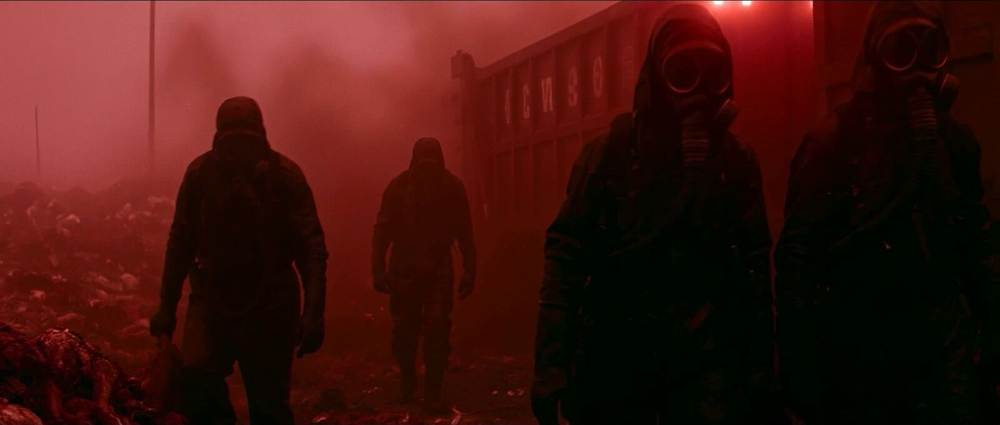
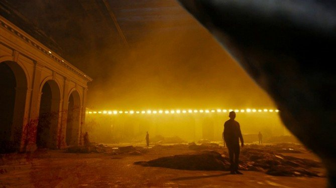
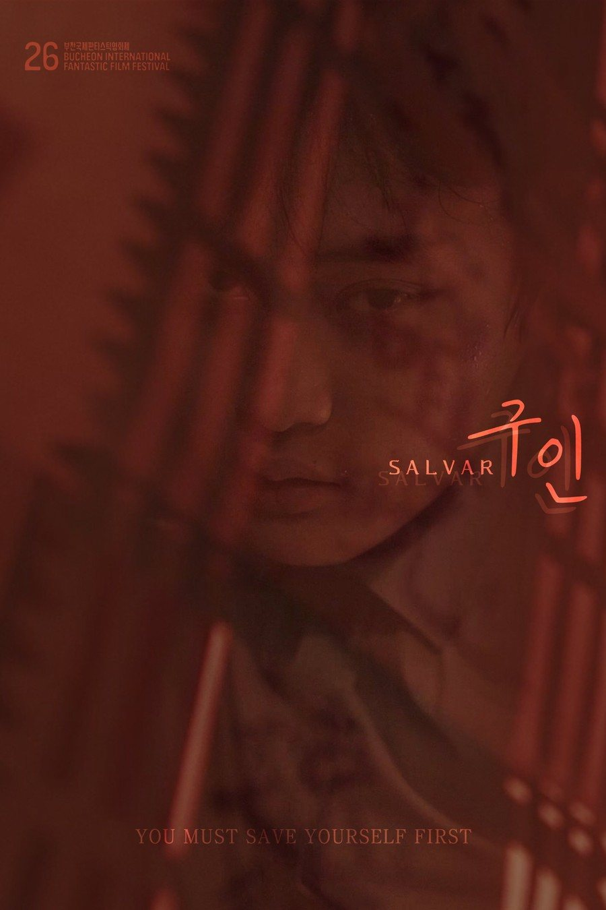
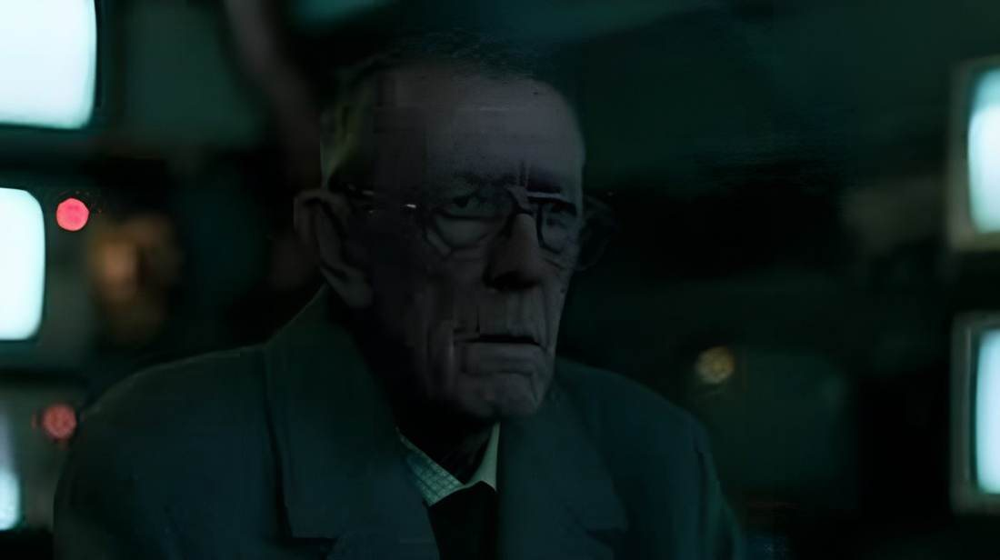
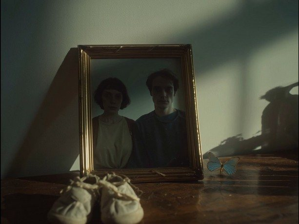
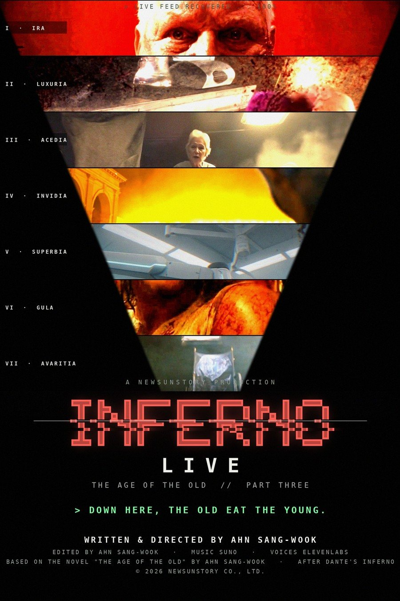
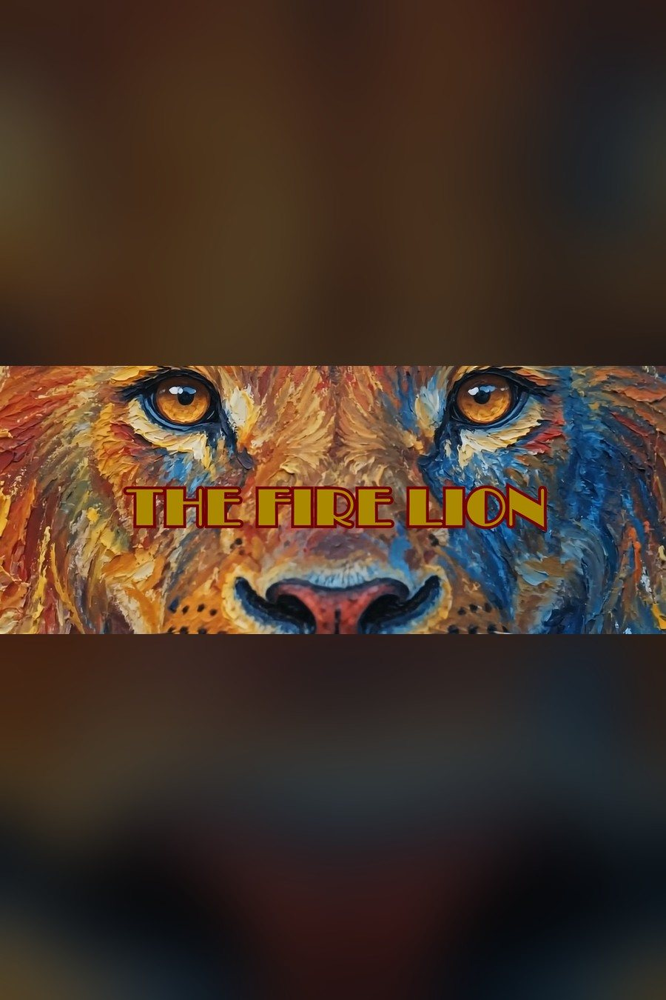

TRAILER · 2026
TRAILER · 2026
올드만 – 기록되지 않은 기억OLDMAN – Off the Record『노인의 시대』 1부 · SF 페이크 다큐 · 파운드 푸티지 · 14:59 · 영화진흥위원회 2026 AI 기반 영화 제작지원작YouTube에서 보기 ↗
서강대학교에서 영상학 박사와 경영학 석사를 받았고, 영화 각색을 열 가지 스타일로 나눈 연구로 책을 썼습니다. 지금은 제 장편소설 『노인의 시대』를 다섯 편의 AI 영화, 한 편의 70분 장편으로 만들고 있습니다.
소설을 쓰고, 그 소설을 영화로 옮깁니다. 그리고 그 둘 사이의 방법, 각색을 연구합니다.
2011년 단편 〈나쁜 놈들〉로 시작해 〈오 솔레 미오〉(휴스턴 국제영화제 금상), 한국·스페인 합작 〈스페인에서〉(마드리드 국제영화제 최우수 외국어 단편영화상)를 거쳐, 2022년 단편 〈구인〉이 40여 개 국제영화제에 선정·수상했습니다. 2025년부터는 AI로 영화를 만듭니다. 대사 없는 부부 이야기 〈벌레〉는 아카데미 공인 영화제인 테헤란과 베이루트 국제단편영화제에 선정되었습니다.
2023년 원작 스튜디오 (주)뉴선스토리를 세웠습니다. 장편소설 『신혼록』(2022 아르코 문학창작기금)과 『인간전』을 냈고, 연작 「인간 4부작」의 세 번째 소설 『노인의 시대』를 다섯 편의 AI 영화로 만들어 70분 장편으로 잇고 있습니다. 1부 〈올드만〉은 영화진흥위원회 2026 AI 기반 영화 제작지원작, 5부 〈신곡〉은 완성되었습니다.
Ahn Sangwook writes novels and turns them into films. His short Salvar was selected by 40+ international festivals; his AI short Beol-lae was selected by the Oscar-qualifying Tehran and Beirut festivals. He founded NewSunStory in 2023 and is now adapting his own novel The Age of the Old into five AI films that join into one 70-minute feature.
장편소설 한 편이 다섯 편의 AI 영화가 되고, 이어 보면 70분 장편이 됩니다. 따로 보면 단편, 이어 보면 장편.
영원을 약속한 치료제 이후, 젊은이의 피는 노인의 시간을 되돌립니다. 효과는 하루. 새벽이 오면 노인은 다시 늙습니다. 그래서 노인들은 매일 밤 젊은이를 사냥하고, 가두고, 기릅니다. 노인군의 계엄 아래 젊은이들은 '포로'가 되어 지하 일곱 마을로 보내집니다. 30년 뒤, 이 규칙은 하나도 바뀌지 않은 채 생중계됩니다.
After a pandemic "cure" that promised eternity, the old live on the young's "day". Five records in five forms: leaked footage, an operation log, broadcast highlights, lab tapes, and a live feed. Watched apart, five shorts; watched together, a 70-minute feature.

24블록은 김태원 「욕망의 레시피」의 틀을 따릅니다. 편마다 안에서도 같은 24블록을 작게 반복합니다.
단테의 일곱 지옥을 본뜬 일곱 죄. 옥타곤에서 진 자는 이 마을과 처분장, 여덟 개의 문 중 하나로 끌려가고, 안나는 다섯 번째 마을 교만의 실험소에 있습니다. 신곡의 남자는 일곱 마을을 거슬러 오릅니다.
옥타곤의 승자는 가장 강한 피를 빼앗기고, 안나는 가장 귀한 피를 스스로 내어 줍니다. 같은 피가 한쪽에서는 독이 되고 한쪽에서는 약이 됩니다. 빼앗는 세계와 내어 주는 한 사람. 다섯 편이 이 거울 하나를 향해 놓여 있습니다.
올드만의 끝 카드 「> SOMEONE IS COMING DOWN.」이 30년 뒤 신곡의 끝 카드 「… AGAIN.」으로 한 번 더 뜨고, 고리가 닫힙니다.
본편은 영화제 출품·상영 중이라 비공개입니다. 예고편 세 편을 여기서 바로 볼 수 있습니다.
TRAILER · 2026

TRAILER · 2026
TRAILER · 2022예고편은 YouTube에서 재생됩니다. 재생 버튼을 누르기 전까지는 YouTube에 아무것도 불러오지 않습니다. 〈벌레〉·〈불사자〉 본편은 영화제 상영 중이라 비공개이며, 심의용 링크는 메일로 요청해 주세요.
『노인의 시대』는 이야기와 세계관이 먼저 있는 AI 영화입니다. 장면이 아니라 세계를 만듭니다.
AI 사용 고지 — 거의 모든 이미지가 생성형 AI로 만들어지고 컷마다 조금씩 다릅니다. 그걸 숨기는 대신 핵심으로 삼았습니다. 실존 인물과 타인의 저작물은 AI에 입력하지 않습니다.
실사 단편에서 AI 영화까지. 대표작 9편을 먼저 보고, 아래에서 전체 목록을 펼칠 수 있습니다.

AI · 2026▶ 예고편
AI · 2025
AI · 2026▶ 예고편
AI · 2026모든 영화의 원작이 되는 곳. 연작 「인간 4부작」은 『인간전』(1940년대)에서 『인간시절』(2045), 『노인의 시대』, 「인간 탈출」로 이어집니다.


각색을 열 가지 스타일로 나눈 연구, 그리고 연극·뮤지컬·아직 찍지 않은 시나리오.
작가가 AI와 함께 직접 만든 웹. 이 사이트의 모든 페이지는 GitHub Pages에서 바로 열립니다.
해 속으로 걸어 들어가는 WebGL 전시관. 1층 로비에서 기획전으로, 엘리베이터로 2층 영화부터 6층 연구까지. 옆으로 밀면 다음 작품, 위아래로 밀면 다른 층.


영화·AI 영화·무대·소설·연구를 층으로 나눈 전시관의 2D 판. 밀어서 다음 층으로 넘어갑니다.
로비로 →영화제·언론용 포스터·스틸·EPK(PDF)를 한국어/영어로 내려받는 자료실.
자료 보기 →사주 명식·혈액형·MBTI·애니어그램·도형심리를 함께 따져 잘 맞는 사람을 점수로 보여주는 매칭 앱. 얼굴 없이, 내면으로 먼저.
열어 보기 →아빠가 아이를 위해 만든 게임 열네 개. 포켓볼·축구교실·히어로즈·농구왕·무지개 보석·좀비 대소동·블록 공방·피규어 공방·잉크총 대작전·두뇌 놀이터·바다 특공대·댄스 파티·제주 좀비 트레인·우주 전투기 360.
놀러 가기 →날아오는 초록 바이러스를 손가락으로 베면 할아버지가 젊어지는 60초 미니 게임.
해 보기 →영어로 수학을 묻고 답하며 아이가 영어 수업에 익숙해지도록 돕는 학습 앱. 색·모양·숫자를 영어로 읽어 줍니다.
열어 보기 →첫 단편부터 『노인의 시대』 다섯 편까지.
영화제·언론 문의, 원작·각색·AI 영화 협업 제안을 환영합니다. 프레스킷과 EPK는 프레스룸에서 바로 내려받을 수 있습니다.